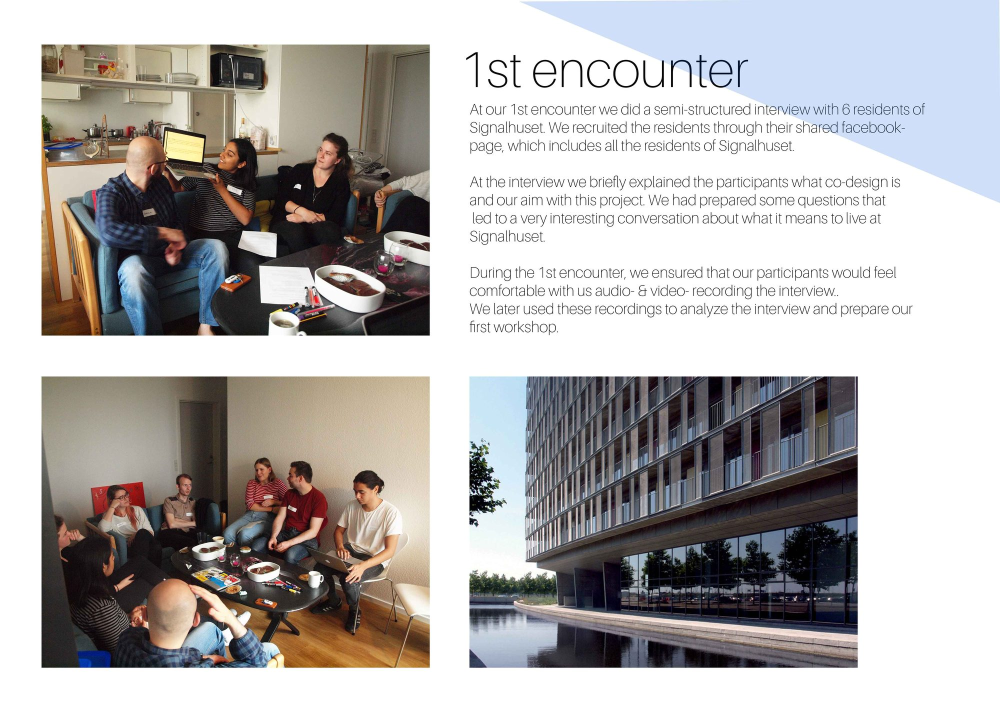
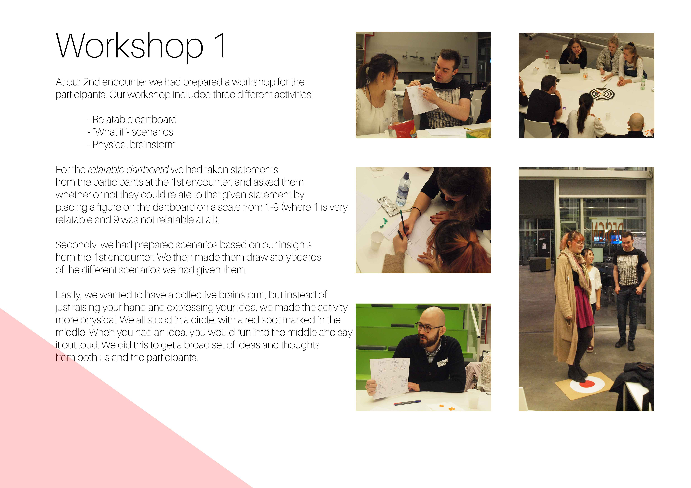
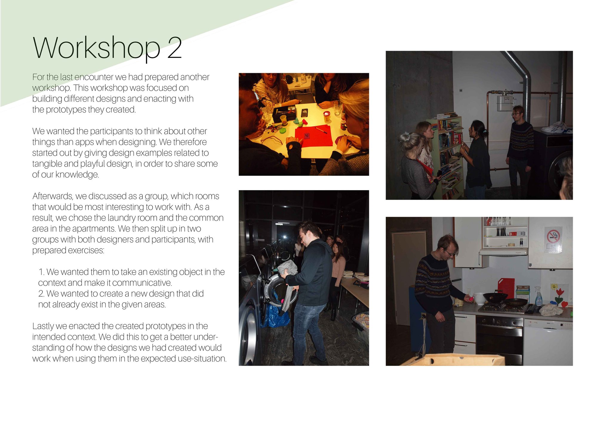
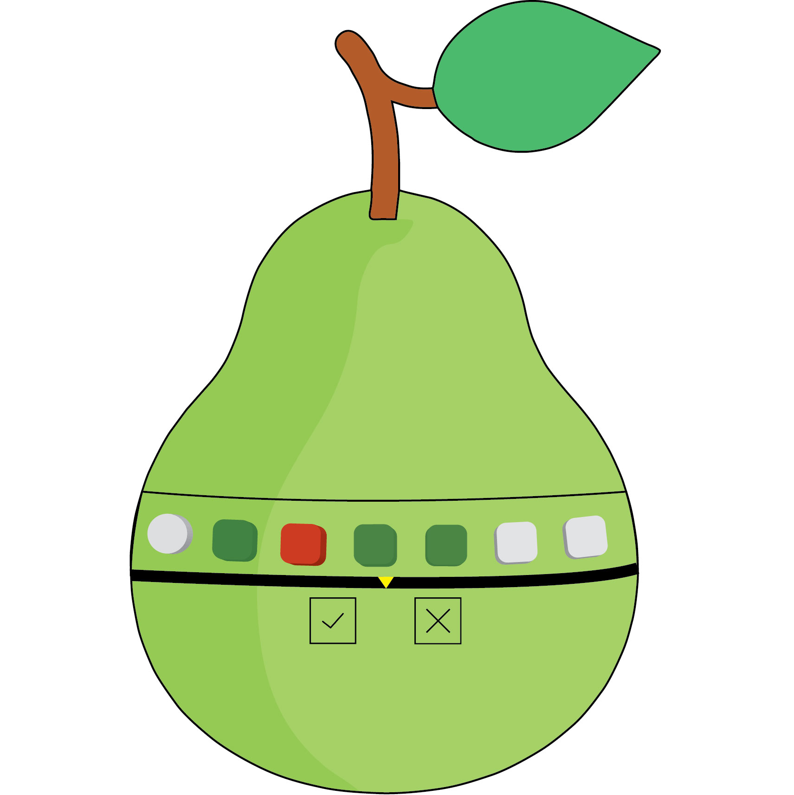
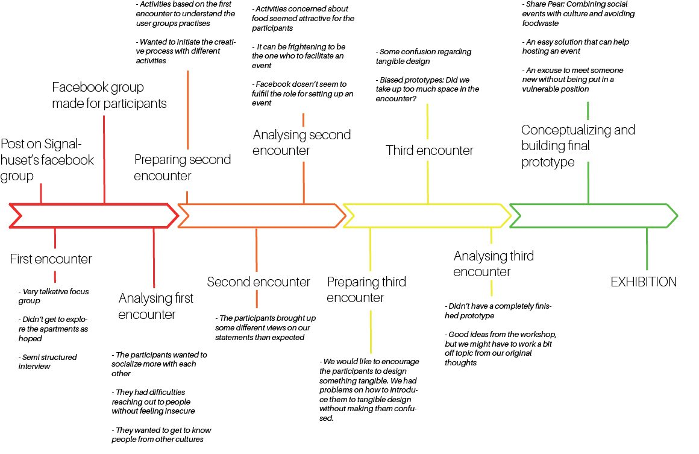

SharePear - Social activities in a multicultural society [2017]
Under the theme of citizenship, we have chosen to work with the relationship between residents at Signalhuset on Amager. The residence is occupied by both exchange students and Danish citizens, thereby making them adapt to a multicultural environment in their own home.
As a citizen, one is part of a larger community. In our case, it is about being connected to other people in a society. Based on these thoughts, we wondered what it is like to be a citizen and to develop relationships in a society, where the stay is short-term. As a result, we decided to work with the relationship between exchange students and Danish citizens who live in the same housing complex. Although the exchange students are here in a short period of time, they still become part of the Danish society. We wondered how exchange students adapt in the community and what reasons Danish citizens have, to develop friendships with someone, who at the end of it, returns to their home country.
During our research, we found out that it was about socialising and cultural exchange. A problem we noticed already after the first encounter, was that the social atmosphere in Signalhuset didn’t live up to the residents’ expectations. Because of this, we decided further to investigate how one could create relations across the many apartments in Signalhuset. Our project is thereby about encouraging relationships and making the act of socialising easier for Danish residents, as well as for the exchange students. We experienced in our research, how both parties want to help each other and create relations, but also that it can be difficult to take initiative to do so. Our design proposal is therefore focused on improving the interaction between Danish residents and exchange students, in a way where neither party feels neglected and to the extent they feel comfortable. The design solution is thereby a product that encourages residents to eat together, so they can meet one another, exchange culture, e.g. through recipes, as well as avoiding waste of food.




